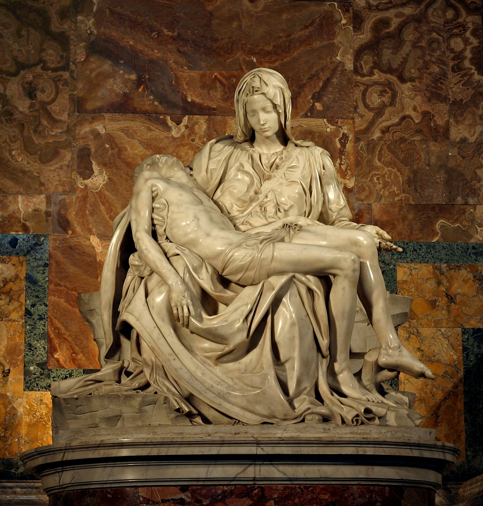
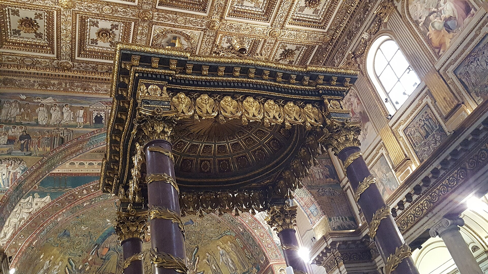
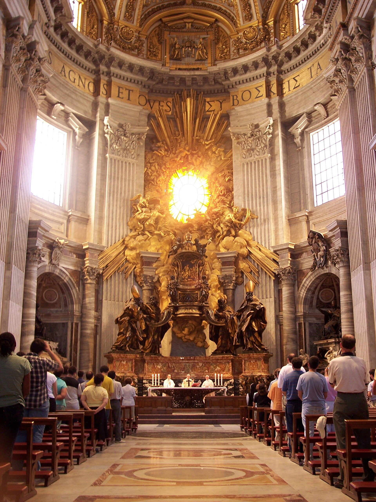
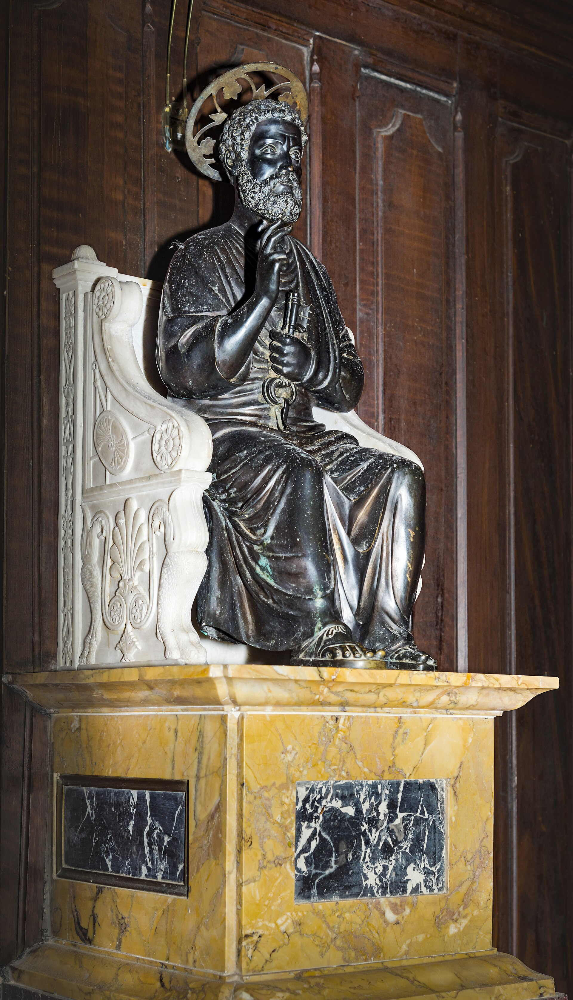
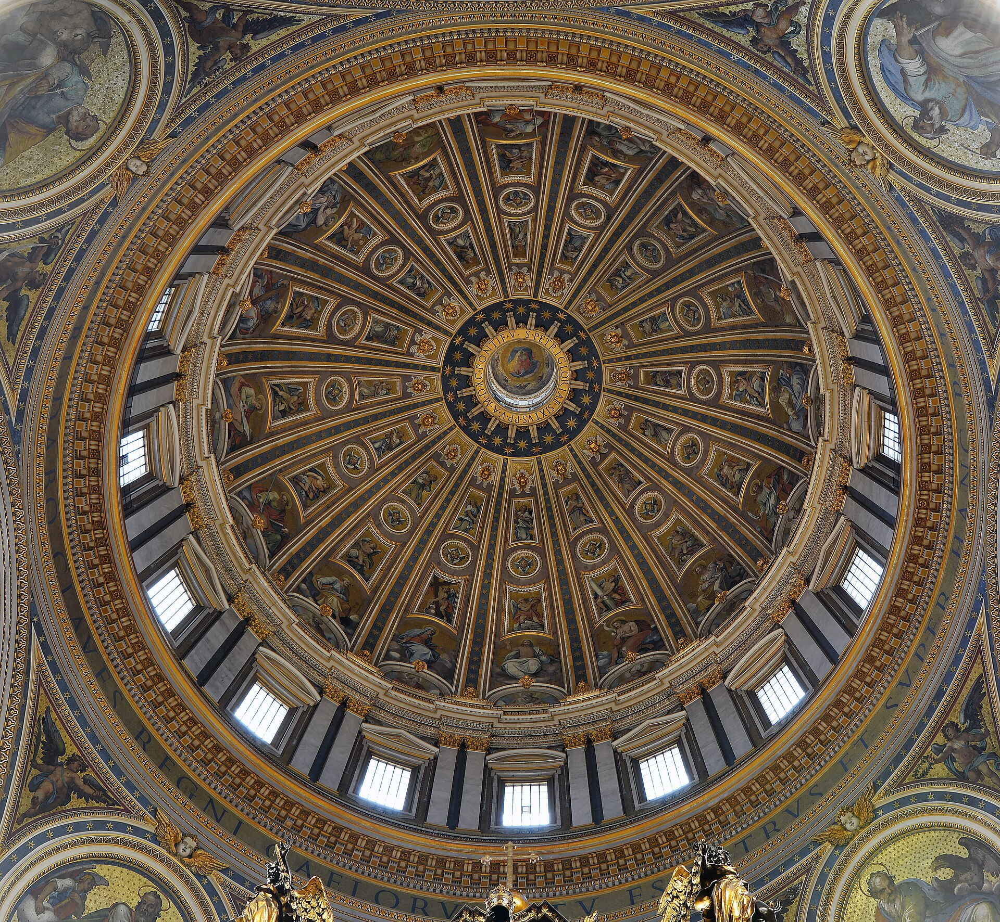

占地 2.3 万平方米、可容 6 万人同时礼拜的天主教中心。从布拉曼特到米开朗基罗再到贝尼尼，一百年间接力建成--文艺复兴与巴洛克的全明星作品，压在一个建筑身上。
看点路线
Il Percorso
- 1进门右手第一小堂：《圣殇》Pietà--先看它，人最少
- 2正中：贝尼尼青铜华盖 Baldacchino，四层楼高
- 3后殿：贝尼尼《圣彼得宝座》与圣光鸽窗
- 4地下墓穴（教皇墓）：含若望·保禄二世墓
- 5登顶（见穹顶页）：电梯 + 320 级或纯楼梯 551 级
重点展品
La Basilica · 6 件必看

《圣殇》Pietà
米开朗基罗 24 岁时的成名作，也是他一生唯一签名的作品--据瓦萨里说，他偶然听到观众把作者错认成别人，连夜回来在圣母胸前的绶带上刻下“来自佛罗伦萨的米开朗基罗所作”。圣母的衣褶如流水，基督的身体没有重量感：大理石在此刻是灵性的物质。

青铜华盖 Baldacchino
29 米高的四柱青铜华盖立于圣彼得墓正上方，螺旋麻花柱的灵感来自所罗门圣殿。青铜取自万神殿门廊（见万神殿的故事），是巴洛克对古代的又一次“拆东墙”--但不可否认，它把整座大殿的视觉焦点钉得死死的。

圣彼得宝座 Cathedra Petri
后殿中央的镀金宝座里封着一枚据说属于圣彼得的古木椅，上方贝尼尼用彩色玻璃造出一束“圣光”：金色天使、放射状光芒与象征圣灵的鸽子窗--巴洛克剧场设计的巅峰，把光变成了建材。

圣彼得的青铜像
右侧廊的坐像，右脚被千年来朝圣者的亲吻摸到几乎消失。排队摸一下圣彼得的脚--摸之前看看那只脚的磨损形状，那是信仰的等高线图。

米开朗基罗的穹顶
内径 42 米、总高 136 米，双壳结构。抬头看穹顶内壁的巨型字样（“你是彼得，我要把我的教会建造在这磐石上”），再想想这个直径刻意比万神殿小了一点点--那是米开朗基罗对前辈的敬意，详见穹顶登顶页。
地下墓穴与教皇墓
大殿地板之下是历代教皇的墓地，最深处是 20 世纪 40 年代考古发掘出的古代墓地--其中一处 graffiti 铭文“彼得在此”（Petros eni），被认为是圣彼得墓 1900 年来持续朝圣的证据链一环。1978 年若望·保禄一世在位 33 天即去世，他的墓如今是人流最密的一处。
历史故事
Le Storie
壹彼得的骨头在下面吗
天主教传统认为，大教堂正殿地下埋着使徒彼得--公元 64 年尼禄迫害期间，他被倒钉十字架于梵蒂冈山，葬礼简陋。
1940 年代，庇护十二世批准在大殿地下挖掘，结果在异教墓园深处发现一处公元 2 世纪的简易纪念龛，墙上的希腊文涂鸦写着“彼得在此”。1968 年，保罗六世宣布：骨骸属于一位 60-70 岁、体格健壮的公元 1 世纪男子。
无论信与不信，这个考古故事本身就是传奇：一座世界最大的教堂，压在一座渔夫的坟墓上--它所有的黄金与大理石，都是这块“磐石”的注脚。
贰米开朗基罗的最后一项工程
1546 年，71 岁的米开朗基罗被教皇保罗三世指派接手这座烂尾了半个世纪的大教堂。他写信婉拒薪水：“我接下这份差事不是为了报酬，而是为了灵魂的救赎。”
然后他交出了答案：集中式希腊十字平面 + 双壳穹顶，把布拉曼特的几何与自己的雕塑感焊在一起。
1564 年他去世时穹顶只建到鼓座。他的学生德拉·波尔塔按图纸在 1590 年封顶--但把穹顶轮廓稍微改陡了一点。今天你看到的轮廓，是米开朗基罗的灵魂加上学生的一点点私货。
叁《圣殇》与 1972 年的锤子
1972 年 5 月 21 日，一位澳大利亚地质学家越过栏杆，用地质锤对《圣殇》连击 15 下：圣母的左臂被砸断、鼻子与眼睑碎裂。修复组从圣彼得地下库房翻出米开朗基罗时代的一块大理石补鼻子，并从此给它装上防弹玻璃。
今天你隔玻璃看她，仍能看到圣母低垂的眉眼--24 岁的天才把一块卡拉拉大理石凿出了“哀而不嚎”的全部克制。
加上这层玻璃，作品与观众之间隔了两重东西：一次疯狂，与五百年时间。
肆贝尼尼的青铜华盖
29 米高的青铜华盖立于圣彼得墓正上方，四根螺旋麻花柱的灵感来自所罗门圣殿--1624-1633 年，29 岁的贝尼尼完成了这件“教皇国的心脏起搏器”。
青铜的来源是万神殿门廊（见万神殿的故事），罗马人为此编了那句著名的牢骚：“野蛮人没干的事，巴贝里尼干了。”
抬头看柱底的蜜蜂与月桂--巴贝里尼家族的纹章。巴洛克的艺术与家族政治，在这四根柱子上等比例缠绕。
伍圣彼得的脚
右侧廊的圣彼得青铜坐像（13 世纪，传为阿诺尔福·迪·坎比奥作），右脚被千年来朝圣者的亲吻与抚摸磨到几乎消失--现在只能隔栏杆碰一下。
中世纪朝圣者亲吻的是脚背；几百年下来，脚趾的轮廓被吻平了。这是全欧洲被触摸次数最多的一尊金属。
排队摸脚的队伍永远不长不短--在圣彼得大殿里，它是最“慢”的一件展品。
陆地下三层的教皇名单
大殿地下墓穴（Grotte）里安葬着 90 余位教皇：从最早的使徒传统，到 1978 年在位仅 33 天的若望·保禄一世，再到 2005 年去世的若望·保禄二世（墓前常年排队最长）。
还有一位非教皇的名人：斯图亚特王朝的“老僭王”詹姆斯三世与他的两个儿子--英国王位的流亡继承人，葬在天主教的心脏里。
走地下墓穴一圈等于读一遍教皇名录：石碑上的名字，就是两千年组织的员工花名册。
柒教皇的“面试厅”
大殿左侧第一个小堂是唱经班小堂，附近是圣器室--教皇选举（Conclave）期间，枢机主教们从“密闭之门”进入西斯廷，但历史上多次选举曾在此区域开会。
1274 年起教皇选举被强制“上锁”（cum clave，即 conclave 一词的来源）：选举人被锁进房间，直到选出新教皇。历史上为逼他们快点出结果，曾用过“只供面包与水”甚至“掀屋顶”的狠招。
西斯廷的烟囱每几十年上一次新闻：白烟升起，广场上十万人同时掏出手机。这一幕的策源地，离你脚下三十米。
捌马赛克冒充的“油画”
大殿里几乎所有“祭坛画”其实都是马赛克--18 世纪起，为防潮防烟，油画被逐一替换成玻璃与石头的马赛克复制品，工作室至今仍在运营。
凑近看多梅尼基诺的《圣杰罗姆》或卡拉奇的《圣塞巴斯蒂安》：三米外是油画，三十厘米内是十万块玻璃。
这是圣彼得最温柔的一个骗局--为了让你以为油画能永生，他们真的让画永生了。
玖“唯一的签名”
米开朗基罗一生只在一件作品上签名：《圣殇》圣母胸前的绶带上，刻着“佛罗伦萨人米开朗基罗·博纳罗蒂所作”。
瓦萨里的记载：他偶然听到朝圣者把作者错认为别人（一说是伦巴第雕塑家），连夜回来刻下名字--之后终生后悔这一冲动，再未签名。
那个签名现在被玻璃与距离保护着。一个 24 岁的年轻人一生中唯一一次虚荣，成了艺术史上最著名的一行字。
拾大殿的“声学彩蛋”
大殿穹顶正下方的地面上嵌着一块铜盘--它标记着进入“回声圆盘”的位置：站在这里低声说话，声音会被穹顶聚拢传回，效果奇幻。
每天的弥撒时间，唱经班的素歌在 120 米高的穹顶下混响出教堂专属的“神圣延迟”--建筑本身是一件乐器。
找那块铜盘（在中央祭坛前）：排队踩上去说话的游客，是圣彼得最日常的合唱团。
参观贴士
Consigli Pratici
- 免费入场但安检巨慢，官网预约免费时段票可走快速通道
- 着装硬规定：不露肩、不过膝（夏季丝巾/围裙现场有租售）
- 《圣殇》小堂早上 7 点开门即看最佳；弥撒时段部分区域封闭
- 周三上午教皇公开接见，广场活动可能影响开放，行程错开
- 登穹顶票在教堂内右侧购（€10 电梯/€6 楼梯），先登顶再参观动线最顺
- 大殿内可免费寄存背包（柱廊右侧），轻装体验翻倍
顺路同游
Da Non Perdere